931-981-3471
We’re proud to provide reliable home improvement and construction services across the West Virginia tri-state area, helping homeowners bring their vision to life with quality workmanship and attention to detail.

Our company is built on a foundation of quality workmanship, reliability, and pride in what we do. We believe every homeowner deserves clear communication, fair pricing, and results that stand the test of time — and that’s exactly what we strive to deliver on every project.
We offer a wide range of interior and exterior services to help homeowners improve and expand their spaces. Our work includes concrete projects, vinyl siding, LVP and hardwood flooring installation and restoration, decks and porches (composite and wood), home additions, drywall, painting, fencing, kitchen and bathroom remodels, metal roofing, and landscaping — all completed with the same level of care and attention to detail.